<!DOCTYPE html>
<html>
  <head>
    <title>Kabupaten Lombok Tengah</title>
    <meta charset="utf-8" />
    <link rel="stylesheet" type="text/css" href="asset/leaflet/leaflet.css" />
    <script src="asset/leaflet/leaflet.js"></script>
    <script src="json/kecpraya.js"></script>
    <style>
      html,
      body {
        height: 100%;
        width: 100%;
        margin: 0;
        padding: 0;
      }
      #map {
        width: 100%;
        height: 100%;
      }
      .leaflet-popup-content {
        width: auto !important;
      }
    </style>
  </head>
  <body>
    <div id="map"></div>
    <script>
      //##############################################//
      // Membuat Icon Pada Peta
      //##############################################//
      var mapIcon = L.Icon.extend({
        iconSize: [32, 37],
      });
      var kesehatan = new mapIcon({ iconUrl: "icon/hospital.png" }),
        taman = new mapIcon({ iconUrl: "icon/playground.png" }),
        waduk = new mapIcon({ iconUrl: "icon/dam.png" }),
        pemerintah = new mapIcon({ iconUrl: "icon/conference.png" }),
        polisi = new mapIcon({ iconUrl: "icon/conference.png" }),
        camat = new mapIcon({ iconUrl: "icon/office.png" });

      //##############################################//
      // Mendeklarasikan Marker kesehatan dan membuatnya menjadi
      // Layer Group
      //##############################################//

      var rs1 = L.marker([-8.7022435, 116.2925074], { icon: kesehatan }).bindPopup("RSUD Praya 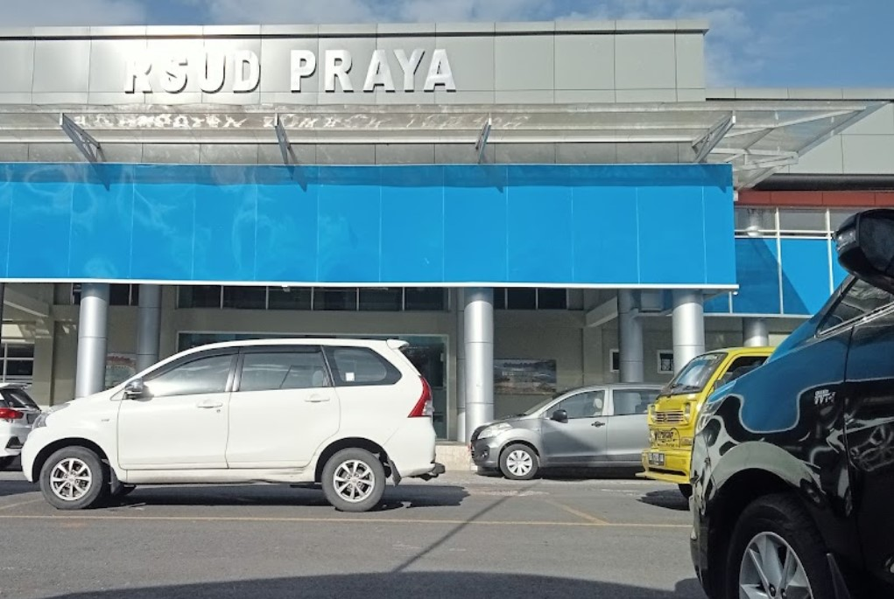");
      var rs2 = L.marker([-8.7057836, 116.2705147], { icon: kesehatan }).bindPopup("puskesmas Paraya 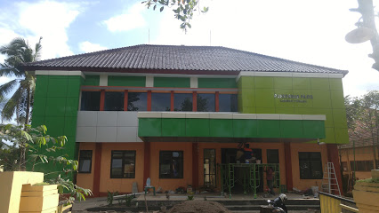");

      var kesehatan = L.layerGroup([rs1, rs2]);

      //##############################################//
      // Mendeklarasikan Marker Taman Bermain dan membuatnya menjadi
      // Layer Group
      //##############################################//
      var tmn1 = L.marker([-8.7045539, 116.2712998], { icon: taman }).bindPopup("Alun-Alun Tastura 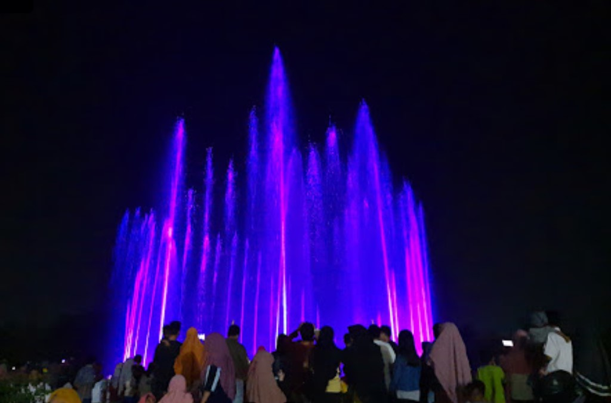");
      var tmn2 = L.marker([-8.7139106, 116.2869397], { icon: taman }).bindPopup("Taman Biao 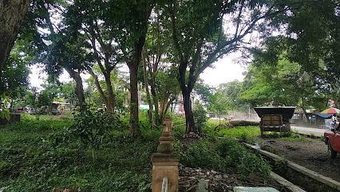");
      var tmn3 = L.marker([-8.7141343, 116.2639882], { icon: taman }).bindPopup("Tonjeng Beru Semart Garden 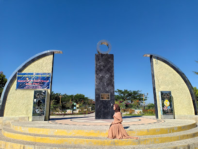");

      var taman = L.layerGroup([tmn1, tmn2, tmn3]);

      //##############################################//
      // Mendeklarasikan Marker pemerintahan dan membuatnya menjadi
      // Layer Group
      //##############################################//

      var pemda = L.marker([-8.7061917, 116.2691036], { icon: pemerintah }).bindPopup("Kantor Bupati Lombok Tengah ");

      var pemerintah = L.layerGroup([pemda]);

      //##############################################//
      // Mendeklarasikan Marker keamanan dan membuatnya menjadi
      // Layer Group
      //##############################################//

      var pol = L.marker([-8.7093713, 116.2793799], { icon: polisi }).bindPopup("Polres Lombok Tengah 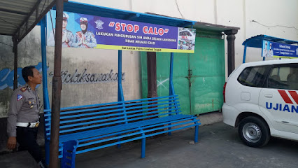");

      var polisi = L.layerGroup([pol]);

      //##############################################//
      // Mendeklarasikan Marker waduk dan membuatnya menjadi
      // Layer Group
      //##############################################//
      var wdk1 = L.marker([-8.735597, 116.2554323], { icon: waduk }).bindPopup("Bendungan Batujai ");
      var wdk2 = L.marker([-8.755298, 116.1861563], { icon: waduk }).bindPopup("Bendungan Pengge 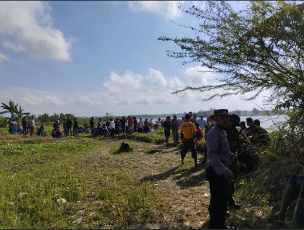");

      var waduk = L.layerGroup([wdk1, wdk2]);

      //##############################################//
      // Mendeklarasikan Marker Kantor camat dan membuatnya menjadi
      // Layer Group
      //##############################################//

      var cmt1 = L.marker([-8.6128812, 116.3103311], { icon: camat }).bindPopup("Kantor Camat Batukliang 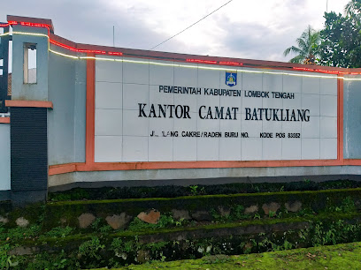");
      var cmt2 = L.marker([-8.588949, 116.3245473], { icon: camat }).bindPopup("Kantor Camat Batukliang Utara 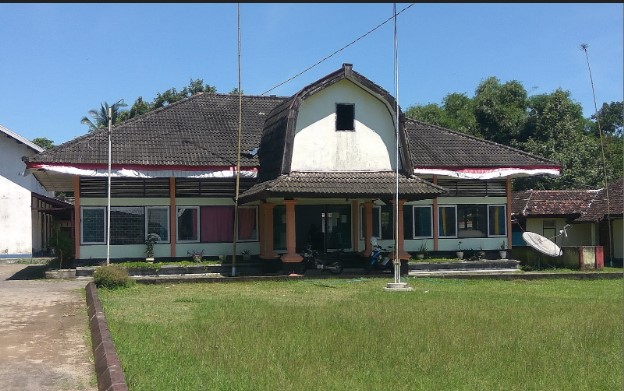");
      var cmt3 = L.marker([-8.6942821, 116.3995881], { icon: camat }).bindPopup("Kantor Camat Janapria 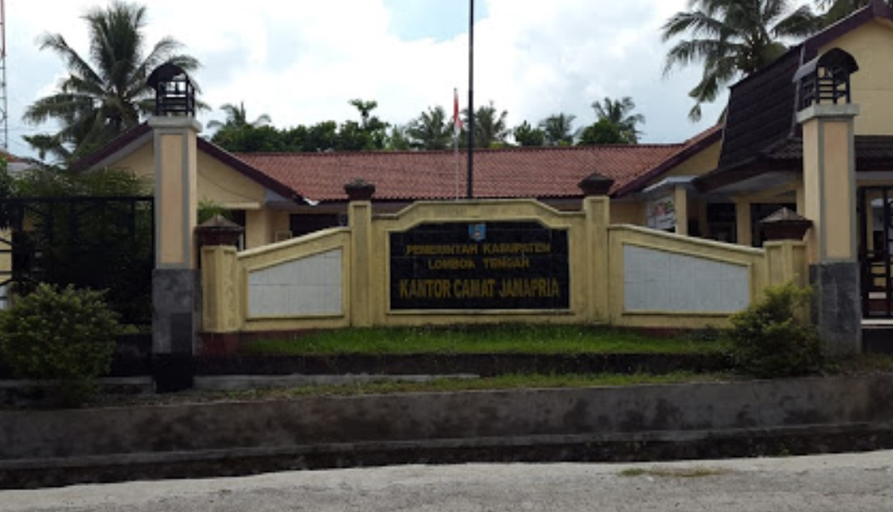");
      var cmt4 = L.marker([-8.6525193, 116.1979991], { icon: camat }).bindPopup("Kantor Camat Jonggat ");
      var cmt5 = L.marker([-8.6343426, 116.3548378], { icon: camat }).bindPopup("Kantor Camat Kopang 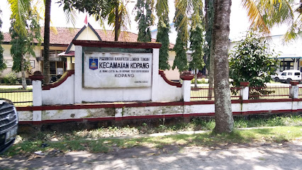");
      var cmt6 = L.marker([-8.6982443, 116.2775457], { icon: camat }).bindPopup("Kantor Camat Praya 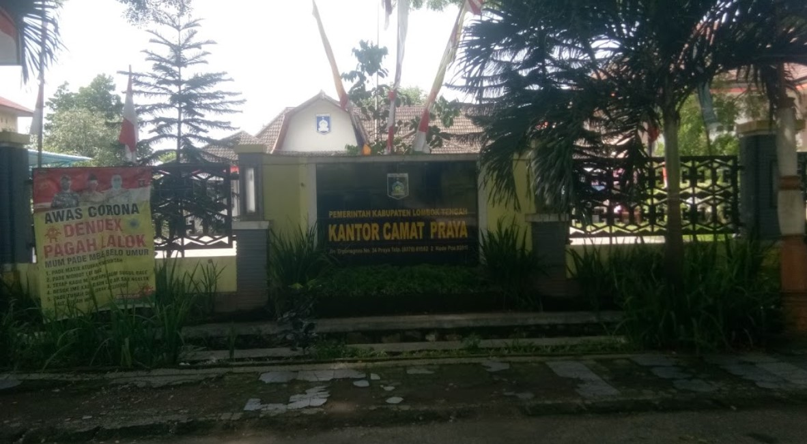");
      var cmt7 = L.marker([-8.742301, 116.2410837], { icon: camat }).bindPopup("Kantor Camat Praya Barat 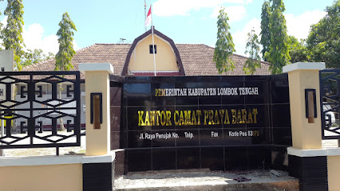");
      var cmt8 = L.marker([-8.7385415, 116.2015728], { icon: camat }).bindPopup("Kantor Camat Praya Barat Daya 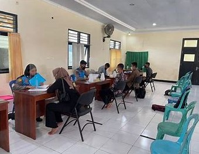");
      var cmt9 = L.marker([-8.7340447, 116.316331], { icon: camat }).bindPopup("Kantor Camat Praya Tengah 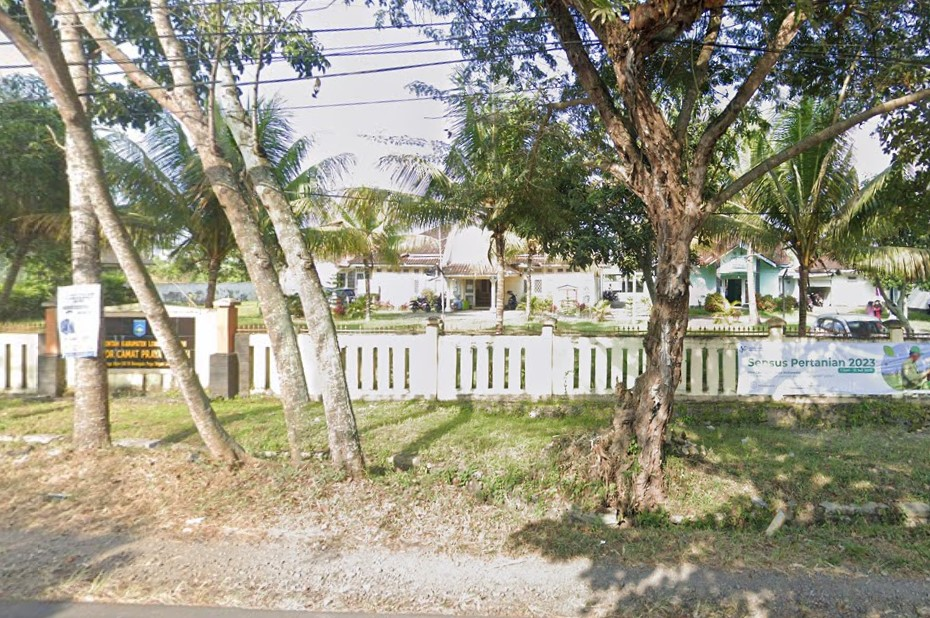");
      var cmt10 = L.marker([-8.7614541, 116.3561055], { icon: camat }).bindPopup("Kantor Camat Praya Timur 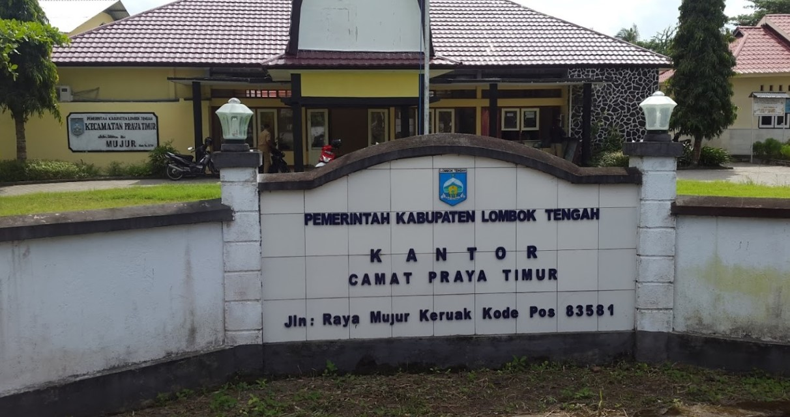");
      var cmt11 = L.marker([-8.6190565, 116.2517066], { icon: camat }).bindPopup("Kantor Camat Pringgarata 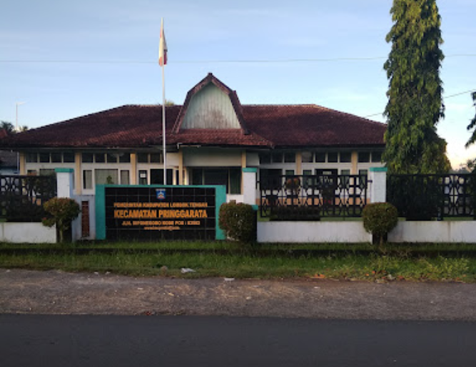");
      var cmt12 = L.marker([-8.8004563, 116.292598], { icon: camat }).bindPopup("Kantor Camat Pujut 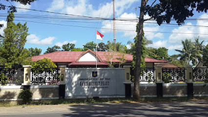");

      var camat = L.layerGroup([cmt1, cmt2, cmt3, cmt4, cmt5, cmt6, cmt7, cmt8, cmt9, cmt10, cmt11, cmt12]);

      //##############################################//
      // Membuat BaseMap Pada Peta
      //##############################################//

      var mbAttr =
          'Map data &copy; <a href="https://www.openstreetmap.org/">OpenStreetMap</a> contributors, ' + '<a href="https://creativecommons.org/licenses/by-sa/2.0/">CC-BY-SA</a>, ' + 'Imagery © <a href="https://www.mapbox.com/">Mapbox</a>',
        mbUrl = "https://api.tiles.mapbox.com/v4/{id}/{z}/{x}/{y}.png?access_token=pk.eyJ1IjoibWFwYm94IiwiYSI6ImNpejY4NXVycTA2emYycXBndHRqcmZ3N3gifQ.rJcFIG214AriISLbB6B5aw";

      var streets = L.tileLayer(mbUrl, { id: "mapbox.streets", attribution: mbAttr });

      //##############################################//
      // Mendeklarasikan Peta kedalam Id Map
      //##############################################//
      var map = L.map("map", {
        center: [-8.6416479, 116.3522657],
        zoom: 11,
        layers: [streets],
      });
      L.tileLayer("https://tile.openstreetmap.org/{z}/{x}/{y}.png", {
        maxZoom: 19,
        attribution: '&copy; <a href="http://www.openstreetmap.org/copyright">OpenStreetMap</a>',
      }).addTo(map);
      //##############################################//
      // Mendeklarasikan BaseLayer Pada Map yakni Street
      //##############################################//
      var baseLayers = {
        Streets: streets,
      };

      var kelpraya = L.geoJSON([kelpraya], {
        style: function (feature) {
          return feature.properties && feature.properties.style;
        },
      });
      var leneng = L.geoJSON([leneng], {
        style: function (feature) {
          return feature.properties && feature.properties.style;
        },
      });
      var prapen = L.geoJSON([prapen], {
        style: function (feature) {
          return feature.properties && feature.properties.style;
        },
      });
      var panjisari = L.geoJSON([panjisari], {
        style: function (feature) {
          return feature.properties && feature.properties.style;
        },
      });
      var batukliangutara = L.geoJSON([btklu], {
        style: function (feature) {
          return feature.properties && feature.properties.style;
        },
      });
      var batukliang = L.geoJSON([btkl], {
        style: function (feature) {
          return feature.properties && feature.properties.style;
        },
      });
      var kopang = L.geoJSON([kpg], {
        style: function (feature) {
          return feature.properties && feature.properties.style;
        },
      });
      var janapria = L.geoJSON([jnp], {
        style: function (feature) {
          return feature.properties && feature.properties.style;
        },
      });
      var jonggat = L.geoJSON([jgt], {
        style: function (feature) {
          return feature.properties && feature.properties.style;
        },
      });

      var pringarata = L.geoJSON([pggt], {
        style: function (feature) {
          return feature.properties && feature.properties.style;
        },
      });
      var praya = L.geoJSON([praya], {
        style: function (feature) {
          return feature.properties && feature.properties.style;
        },
      });
      var prabarda = L.geoJSON([prabarda], {
        style: function (feature) {
          return feature.properties && feature.properties.style;
        },
      });
      var prabar = L.geoJSON([prabar], {
        style: function (feature) {
          return feature.properties && feature.properties.style;
        },
      });

      var prateng = L.geoJSON([prateng], {
        style: function (feature) {
          return feature.properties && feature.properties.style;
        },
      });
      var pratim = L.geoJSON([pratim], {
        style: function (feature) {
          return feature.properties && feature.properties.style;
        },
      });
      var pujut = L.geoJSON([pjt], {
        style: function (feature) {
          return feature.properties && feature.properties.style;
        },
      });
      //##############################################//
      // Deklarasi untuk memilih Icon yang akan ditampilkan
      //##############################################//
      var overlays = {
        kesehatan: kesehatan,
        waduk: waduk,
        taman: taman,
        pemerintah: pemerintah,
        polisi: polisi,
        camat: camat,
        // "Kelurahan Praya ": kelpraya,
        // "Kelurahan Leneng": leneng,
        // "Keluranan Prapen": prapen,
        // "Keluranan Panjisari": panjisari,
        // Kecamatan
        "Kec. Batuklaiang Utara": batukliangutara,
        "Kec. Batuklaiang": batukliang,
        "Kec. Kopang": kopang,
        "Kec. Janapria": janapria,
        "Kec. Pringarata": pringarata,
        "Kec. Jonggat": jonggat,
        "Kec. Praya": praya,
        "Kec. Praya Barat Daya": prabarda,
        "Kec. Praya Barat": prabar,
        "Kec. Praya Tengah": prateng,
        "Kec. Praya Timur": pratim,
        "Kec. Pujut": pujut,
      };

      //##############################################//
      // Menambah  variabel baselayaer dan overlay kedalam map
      //##############################################//
      L.control.layers(baseLayers, overlays).addTo(map);

      //##############################################//
      // Menbambil data geospesial wilayak kecamatan praya
      //##############################################//
      L.geoJSON([btskab], {
        style: function (feature) {
          return feature.properties && feature.properties.style;
        },
      }).addTo(map);
    </script>
  </body>
</html>
